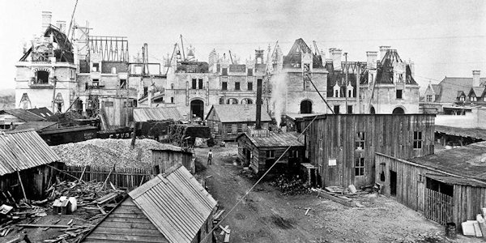

Biltmore History
Completed in 1895, George Vanderbilt’s 250-room chateau is as impressive today as it was more than a century ago. Biltmore House is truly a wonder of architecture and hospitality. As our guest, you’re invited to enjoy a self-guided tour of the house, as well as the beautiful gardens and grounds surrounding it, designed by renowned landscape architect Frederick Law Olmsted.
Your self-guided visit is included in estate admission. An in-depth audio guide and guided specialty tours are also available at additional cost.
Back to main To the Gardens1862 - George Vanderbilt is born in Staten Island.
As a grandson of famed industrialist and philanthropist Cornelius Vanderbilt, George takes his place among one of America’s best-known families.
1888 - George Vanderbilt first visits Asheville, North Carolina.
A short visit to the Blue Ridge Mountains with his mother immediately sparks Vanderbilt’s imagination. He has found the perfect location for his country home.
1889 Construction of Biltmore House begins.
Vanderbilt’s 250-room French Renaissance chateau is a true marvel, the largest undertaking in residential architecture. Over a six-year period, an entire community of craftsmen comes together to create America’s premier home and the environmental wonderland that surrounds it.
1895 - Vanderbilt officially opens Biltmore to friends and family.
On Christmas Eve, the country retreat George Vanderbilt has spent so long planning is marvelously decorated and full of festivity. The finished home contains over four acres of floor space, including 35 bedrooms, 43 bathrooms, and 65 fireplaces.
1898 - George Vanderbilt marries Edith Stuyvesant Dresser in Paris.
Edith is a descendant of Peter Stuyvesant, the first governor of Dutch colonial New York. After honeymooning in Italy, Edith and George return to live at Biltmore.
1900 - Cornelia Vanderbilt is born at Biltmore.
George and Edith’s only child is born on the evening of August 22 in the Louis XV Room. It is a celebrity birth, even by modern standards.
Construction of the Main Dairy and Horse Barn begins.
The Horse Barn is a thriving social and work center for the families who farmed Biltmore, and the agricultural heart of the estate. It remains a unique connection to the estate’s past.
1914 - George Vanderbilt passes away at the age of 51.
Vanderbilt is buried in the Vanderbilt family mausoleum on Staten Island. He leaves an enormous philanthropic legacy. Edith sells approximately 87,000 acres of the estate to the United States Forest Service for less than $5 an acre.
1924 - Cornelia Vanderbilt marries the Honorable John Francis Amherst Cecil.
A respected British diplomat, Cecil marries his bride at All Souls Church in Biltmore Village.
1925
John and Cornelia Vanderbilt Cecil’s first son, George Henry Vanderbilt Cecil, is born at the estate.
1928
John and Cornelia’s second son, William Amherst Vanderbilt Cecil, is born in the Louis XV Room where she herself was born.
1930 - Cornelia and John Cecil open Biltmore House to the public.
Leaders in Asheville hope the celebrated house will increase tourism during the Depression.
1942 - Biltmore House stores art during World War II.
During the war, the house stores priceless works from the National Gallery of Art in Washington, DC.
1960 - William Cecil returns to Biltmore.
Leaving his banking career, William Cecil joins his brother in managing the estate, focusing on self-sufficiency and preserving the estate’s historic splendor.
1971 - William Cecil plants his first vines at Biltmore.
Not satisfied with his first bottling, Mr. Cecil travels to France and brings back sixth-generation winemaster Philippe Jourdain to be Biltmore’s first winemaker.
1983 - The Biltmore Estate Wine Company is established.
Construction begins on a new winery in what had been the estate’s dairy. Mr. Cecil proclaims that it is “the most historic event since my grandfather had opened his estate to his family on Christmas Day ninety years earlier.” The winery opens to guests in 1985.
2001 - The Inn on Biltmore Estate opens.
Vanderbilt’s initial plans in 1900 to create an inn never materialized in his lifetime. The idea finally becomes a reality with The Inn on Biltmore Estate, offering guests a personal taste of Vanderbilt hospitality.
2010 - Antler Hill Village opens.
Antler Hill Village expands Biltmore’s legacy of entertainment and hospitality for a new generation, with a Vanderbilt exhibition and new opportunities for shopping, dining, and outdoor activities.
2012 - Biltmore honored for environmental stewardship.
The Asheville GreenWorks Hall of Fame Award is presented to Biltmore for its sustainability initiatives, including a new solar array and a tree protection project.
2015 - Village Hotel on Biltmore Estate opens.
A casual and relaxed hotel is built in Antler Hill Village to serve more overnight guests who wish to experience Vanderbilt-inspired hospitality.